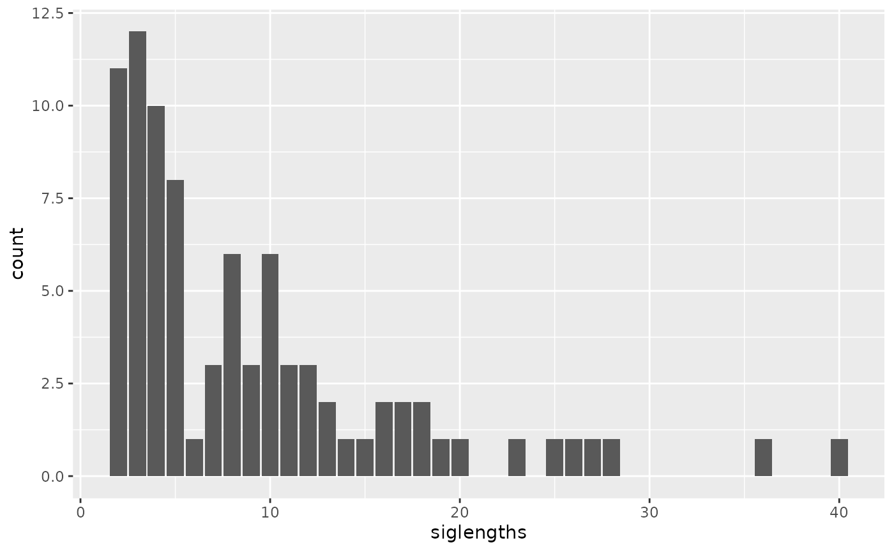
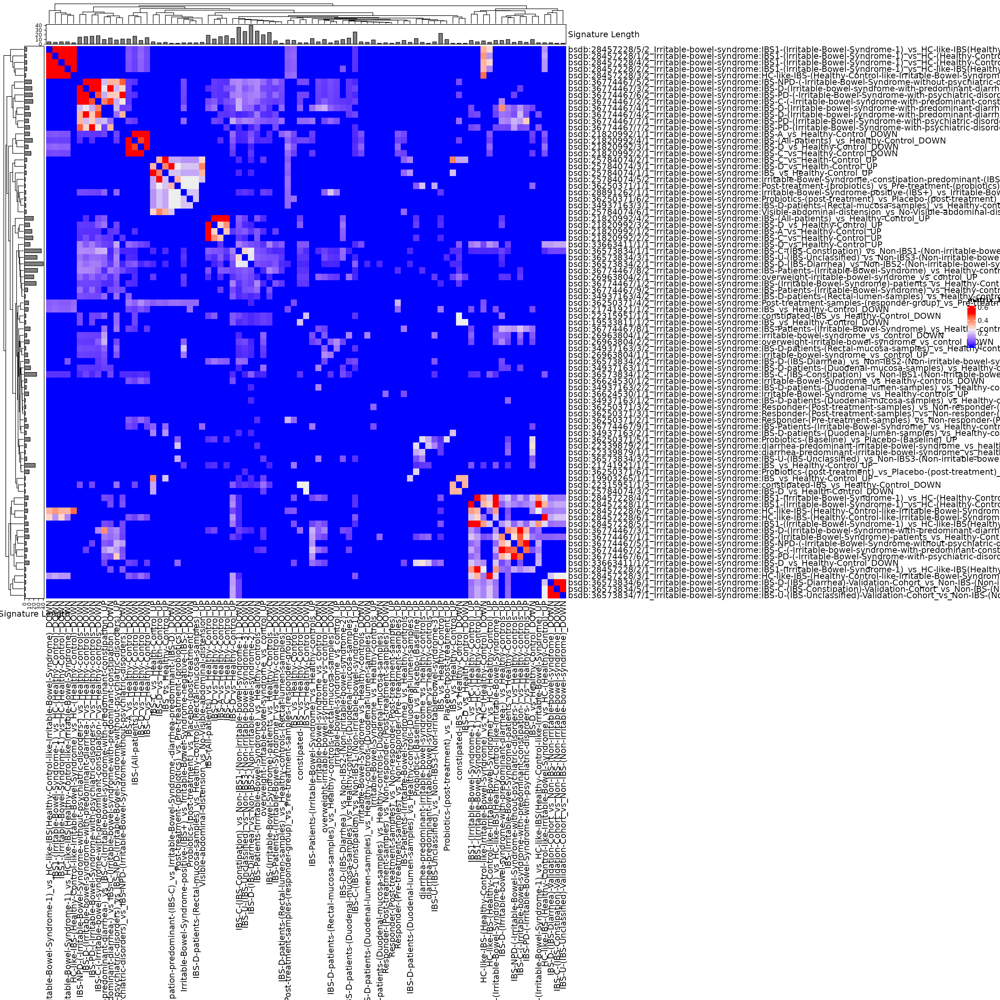
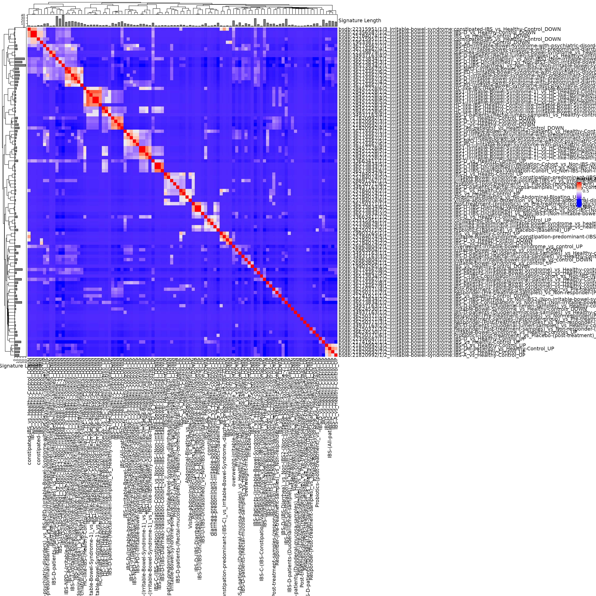

The Irritable Bowel Syndrome-associated Microbiome
Kweku Amoo
09 November, 2026
Source:vignettes/capstoneanalysis_kweku.rmd
capstoneanalysis_kweku.rmdAnalysis objectives
- Import, recode, and subset data from bugsigdb.org
- Create a table of studies
- Create a clustered heatmap showing similarity of signatures from independent studies
- Calculate the frequency of appearance of each taxa in independent signatures, and identify the most frequently reported taxa
- Estimate the probability of the most frequently identified taxa occuring so frequently by chance
Packages installation
Install packages (not evaluated in vignette)
install.packages(c("devtools", "tidyverse", "kableExtra", "gt", "glue"))
devtools::install_github("waldronlab/bugSigSimple")
devtools::install_github("waldronlab/BugSigDBStats")
devtools::install_github("waldronlab/bugsigdbr")Data import, recoding, and subset
library(bugSigSimple)
dat <- bugsigdbr::importBugSigDB(cache = FALSE)
dim(dat)## [1] 7425 51
names(dat)## [1] "BSDB ID" "Study"
## [3] "Study design" "PMID"
## [5] "DOI" "URL"
## [7] "Authors list" "Title"
## [9] "Journal" "Year"
## [11] "Keywords" "Experiment"
## [13] "Location of subjects" "Host species"
## [15] "Body site" "UBERON ID"
## [17] "Condition" "EFO ID"
## [19] "Group 0 name" "Group 1 name"
## [21] "Group 1 definition" "Group 0 sample size"
## [23] "Group 1 sample size" "Antibiotics exclusion"
## [25] "Sequencing type" "16S variable region"
## [27] "Sequencing platform" "Data transformation"
## [29] "Statistical test" "Significance threshold"
## [31] "MHT correction" "LDA Score above"
## [33] "Matched on" "Confounders controlled for"
## [35] "Pielou" "Shannon"
## [37] "Chao1" "Simpson"
## [39] "Inverse Simpson" "Richness"
## [41] "Signature page name" "Source"
## [43] "Curated date" "Curator"
## [45] "Revision editor" "Description"
## [47] "Abundance in Group 1" "MetaPhlAn taxon names"
## [49] "NCBI Taxonomy IDs" "State"
## [51] "Reviewer"
#library(tidyverse)
#condition_of_interest <- c("irritable bowel syndrome")
#efo <- bugsigdbr::getOntology("efo")
#dat_condition <- bugsigdbr::subsetByOntology(dat, column = "Condition", "irritable bowel syndrome", efo) %>%
# mutate(comparison1 = paste(`Group 0 name`, `Group 1 name`, sep = " vs "))
library(tidyverse)## ── Attaching core tidyverse packages ──────────────────────── tidyverse 2.0.0 ──
## ✔ dplyr 1.2.1 ✔ readr 2.2.0
## ✔ forcats 1.0.1 ✔ stringr 1.6.0
## ✔ ggplot2 4.0.3 ✔ tibble 3.3.1
## ✔ lubridate 1.9.5 ✔ tidyr 1.3.2
## ✔ purrr 1.2.2
## ── Conflicts ────────────────────────────────────────── tidyverse_conflicts() ──
## ✖ dplyr::filter() masks stats::filter()
## ✖ dplyr::lag() masks stats::lag()
## ℹ Use the conflicted package (<http://conflicted.r-lib.org/>) to force all conflicts to become errors
library(bugsigdbr)
dat <- importBugSigDB(cache = TRUE) ## Using cached version from 2026-11-09 16:31:45
dat_condition <- dat %>%
filter(grepl("irritable bowel syndrome", Condition, ignore.case = TRUE)) %>%
mutate(comparison1 = paste(`Group 0 name`, `Group 1 name`, sep = " vs "))
nrow(dat_condition)## [1] 101
head(dat_condition)## BSDB ID Study Study design PMID
## 1 bsdb:19533811/1/2 19533811 case-control 19533811
## 2 bsdb:19903265/1/1 19903265 case-control 19903265
## 3 bsdb:19903265/1/2 19903265 case-control 19903265
## 4 bsdb:21741921/1/1 21741921 case-control 21741921
## 5 bsdb:21741921/1/2 21741921 case-control 21741921
## 6 bsdb:21820992/1/1 21820992 case-control,prospective cohort 21820992
## DOI URL
## 1 10.3748/wjg.15.2887 <NA>
## 2 10.1111/j.1365-2982.2009.01427.x <NA>
## 3 10.1111/j.1365-2982.2009.01427.x <NA>
## 4 10.1053/j.gastro.2011.06.072 <NA>
## 5 10.1053/j.gastro.2011.06.072 <NA>
## 6 10.1053/j.gastro.2011.07.043 <NA>
## Authors list
## 1 Kerckhoffs A.P., Samsom M., van der Rest M.E., de Vogel J., Knol J., Ben-Amor K. , Akkermans L.M.
## 2 Tana C., Umesaki Y., Imaoka A., Handa T., Kanazawa M. , Fukudo S.
## 3 Tana C., Umesaki Y., Imaoka A., Handa T., Kanazawa M. , Fukudo S.
## 4 Saulnier D.M., Riehle K., Mistretta T.A., Diaz M.A., Mandal D., Raza S., Weidler E.M., Qin X., Coarfa C., Milosavljevic A., Petrosino J.F., Highlander S., Gibbs R., Lynch S.V., Shulman R.J. , Versalovic J.
## 5 Saulnier D.M., Riehle K., Mistretta T.A., Diaz M.A., Mandal D., Raza S., Weidler E.M., Qin X., Coarfa C., Milosavljevic A., Petrosino J.F., Highlander S., Gibbs R., Lynch S.V., Shulman R.J. , Versalovic J.
## 6 Rajilić-Stojanović M., Biagi E., Heilig H.G., Kajander K., Kekkonen R.A., Tims S. , de Vos W.M.
## Title
## 1 Lower Bifidobacteria counts in both duodenal mucosa-associated and fecal microbiota in irritable bowel syndrome patients
## 2 Altered profiles of intestinal microbiota and organic acids may be the origin of symptoms in irritable bowel syndrome
## 3 Altered profiles of intestinal microbiota and organic acids may be the origin of symptoms in irritable bowel syndrome
## 4 Gastrointestinal microbiome signatures of pediatric patients with irritable bowel syndrome
## 5 Gastrointestinal microbiome signatures of pediatric patients with irritable bowel syndrome
## 6 Global and deep molecular analysis of microbiota signatures in fecal samples from patients with irritable bowel syndrome
## Journal
## 1 World journal of gastroenterology
## 2 Neurogastroenterology and motility : the official journal of the European Gastrointestinal Motility Society
## 3 Neurogastroenterology and motility : the official journal of the European Gastrointestinal Motility Society
## 4 Gastroenterology
## 5 Gastroenterology
## 6 Gastroenterology
## Year Keywords Experiment Location of subjects Host species
## 1 2009 <NA> Experiment 1 Netherlands Homo sapiens
## 2 2010 <NA> Experiment 1 Japan Homo sapiens
## 3 2010 <NA> Experiment 1 Japan Homo sapiens
## 4 2011 <NA> Experiment 1 United States of America Homo sapiens
## 5 2011 <NA> Experiment 1 United States of America Homo sapiens
## 6 2011 <NA> Experiment 1 Finland Homo sapiens
## Body site UBERON ID
## 1 Feces,Mucosa of small intestine UBERON:0001204,UBERON:0001988
## 2 Feces UBERON:0001988
## 3 Feces UBERON:0001988
## 4 Feces UBERON:0001988
## 5 Feces UBERON:0001988
## 6 Feces UBERON:0001988
## Condition EFO ID Group 0 name Group 1 name
## 1 Irritable bowel syndrome EFO:0000555 Healthy Control IBS
## 2 Irritable bowel syndrome EFO:0000555 Healthy Control IBS
## 3 Irritable bowel syndrome EFO:0000555 Healthy Control IBS
## 4 Irritable bowel syndrome EFO:0000555 Healthy Control IBS
## 5 Irritable bowel syndrome EFO:0000555 Healthy Control IBS
## 6 Irritable bowel syndrome EFO:0000555 Healthy Control IBS-A
## Group 1 definition
## 1 Twelve male and 29 female IBS patients included in this study fulfilled the Rome II criteria for IBS and were categorized as diarrhea predominant (IBS-D), constipation predominant (IBS-C) or alternating IBS subgroup (IBS-A)
## 2 All patients were diagnosed with IBS after conducting a medical interview based on Rome II criteria and positive judgment by a Rome II modular questionnaire retrospectively and positively fulfilling Rome III criteria. According to Rome II criteria related to bowel habits, 11 subjects had constipation-predominant IBS (IBS-C), eight had diarrhoea-predominant IBS (IBS-D) and seven had mixed IBS (IBS-M).
## 3 All patients were diagnosed with IBS after conducting a medical interview based on Rome II criteria and positive judgment by a Rome II modular questionnaire retrospectively and positively fulfilling Rome III criteria. According to Rome II criteria related to bowel habits, 11 subjects had constipation-predominant IBS (IBS-C), eight had diarrhoea-predominant IBS (IBS-D) and seven had mixed IBS (IBS-M).
## 4 Children ages 7-12 who met the Pediatric Rome III criteria for IBS (Table 1). Subtyping of IBS was based on previous recommendations for IBS in adults because no Pediatric Rome subtype criteria exist for children.
## 5 Children ages 7-12 who met the Pediatric Rome III criteria for IBS (Table 1). Subtyping of IBS was based on previous recommendations for IBS in adults because no Pediatric Rome subtype criteria exist for children.
## 6 IBS patients fulfilled the Rome II criteria. Alternating IBS (IBS-A)
## Group 0 sample size Group 1 sample size Antibiotics exclusion Sequencing type
## 1 26 41 <NA> <NA>
## 2 26 26 <NA> WMS
## 3 26 26 <NA> WMS
## 4 27 28 6 months 16S
## 5 27 28 6 months 16S
## 6 46 19 <NA> 16S
## 16S variable region Sequencing platform Data transformation
## 1 NA RT-qPCR raw counts
## 2 NA RT-qPCR <NA>
## 3 NA RT-qPCR <NA>
## 4 123 PhyloChip relative abundances
## 5 123 PhyloChip relative abundances
## 6 NA Human Intestinal Tract Chip <NA>
## Statistical test Significance threshold MHT correction LDA Score above
## 1 T-Test 0.05 TRUE NA
## 2 Spearman Correlation 0.05 FALSE NA
## 3 Spearman Correlation 0.05 FALSE NA
## 4 Mann-Whitney (Wilcoxon) 0.05 FALSE NA
## 5 Mann-Whitney (Wilcoxon) 0.05 FALSE NA
## 6 T-Test 0.05 TRUE NA
## Matched on Confounders controlled for Pielou Shannon Chao1 Simpson
## 1 <NA> <NA> <NA> <NA> <NA> <NA>
## 2 age,sex <NA> <NA> <NA> <NA> <NA>
## 3 age,sex <NA> <NA> <NA> <NA> <NA>
## 4 <NA> <NA> <NA> <NA> <NA> <NA>
## 5 <NA> <NA> <NA> <NA> <NA> <NA>
## 6 <NA> <NA> <NA> <NA> <NA> <NA>
## Inverse Simpson Richness Signature page name
## 1 <NA> <NA> Signature 2
## 2 <NA> <NA> Signature 1
## 3 <NA> <NA> Signature 2
## 4 <NA> unchanged Signature 1
## 5 <NA> unchanged Signature 2
## 6 <NA> <NA> Signature 1
## Source Curated date Curator
## 1 Tables 2 and 3 19 July 2021 Kwekuamoo
## 2 Table 2 4 July 2021 Kwekuamoo
## 3 text 19 July 2023 Atrayees
## 4 Figure 2; Supplementary Table 1A 8 July 2021 Kwekuamoo
## 5 Figure 2; Supplementary Table 1B 8 July 2021 Kwekuamoo
## 6 Table 1. 15 July 2021 Kwekuamoo
## Revision editor
## 1 Chloe,Kwekuamoo,WikiWorks
## 2 Kwekuamoo,Atrayees,WikiWorks
## 3 Atrayees,WikiWorks
## 4 Kwekuamoo,Claregrieve1,WikiWorks
## 5 Kwekuamoo,Claregrieve1,WikiWorks
## 6 Kwekuamoo,WikiWorks
## Description
## 1 Real time PCR analysis of fecal bifidobacteria in HS, IBS patients and IBS subgroups
## 2 Comparison of GI microbiota between IBS patients and the\ncontrols
## 3 Comparison of GI microbiota between IBS patients and the controls\n\nAbundance in
## 4 Differential microbial abundance between IBS patients and controls
## 5 Differential microbial abundance between IBS patients and controls
## 6 Differences Between Intestinal Microbiota in Healthy and IBS.\nNOTE. Genus-like phylogenetic groups for which the hybridization signal differed significantly between the healthy subjects and (one of the subtypes of) IBS patients are indicated. Gray shading represents phylogenetic groups with a decreased signal in IBS patients. a) Significant (q < .05) correlation. b) Strongly significant (q < .01) correlation.
## Abundance in Group 1
## 1 decreased
## 2 increased
## 3 decreased
## 4 increased
## 5 decreased
## 6 decreased
## MetaPhlAn taxon names
## 1 k__Bacillati|p__Actinomycetota|c__Actinomycetes|o__Bifidobacteriales|f__Bifidobacteriaceae|g__Bifidobacterium|s__Bifidobacterium catenulatum, k__Bacillati|p__Bacillota|c__Clostridia|o__Peptostreptococcales|f__Peptostreptococcaceae|g__Romboutsia|s__Romboutsia lituseburensis, k__Bacillati|p__Actinomycetota|c__Actinomycetes|o__Bifidobacteriales|f__Bifidobacteriaceae|g__Bifidobacterium
## 2 k__Bacillati|p__Bacillota|c__Negativicutes|o__Veillonellales|f__Veillonellaceae|g__Veillonella, k__Bacillati|p__Bacillota|c__Bacilli|o__Lactobacillales|f__Lactobacillaceae|g__Lactobacillus
## 3 k__Bacillati|p__Bacillota|c__Clostridia|o__Eubacteriales|f__Clostridiaceae|g__Clostridium
## 4 k__Pseudomonadati|p__Acidobacteriota|c__Terriglobia|o__Terriglobales|f__Acidobacteriaceae, k__Pseudomonadati|p__Pseudomonadota|c__Gammaproteobacteria|o__Aeromonadales|f__Aeromonadaceae, k__Pseudomonadati|p__Pseudomonadota|c__Gammaproteobacteria|o__Alteromonadales|f__Alteromonadaceae, k__Bacillati|p__Bacillota|c__Bacilli|o__Bacillales|f__Bacillaceae, k__Bacillati|p__Actinomycetota|c__Actinomycetes|o__Micrococcales|f__Cellulomonadaceae, k__Bacillati|p__Bacillota|c__Clostridia|o__Eubacteriales|f__Clostridiaceae, k__Pseudomonadati|p__Pseudomonadota|c__Gammaproteobacteria|o__Legionellales|f__Coxiellaceae, k__Pseudomonadati|p__Thermodesulfobacteriota|c__Desulfobacteria|o__Desulfobacterales|f__Desulfobacteraceae, k__Pseudomonadati|p__Thermodesulfobacteriota|c__Desulfovibrionia|o__Desulfovibrionales|f__Desulfovibrionaceae, k__Pseudomonadati|p__Pseudomonadota|c__Gammaproteobacteria|o__Enterobacterales|f__Enterobacteriaceae, k__Pseudomonadati|p__Pseudomonadota|c__Gammaproteobacteria|o__Enterobacterales|f__Enterobacteriaceae|g__Escherichia|s__Escherichia coli, k__Bacillati|p__Bacillota|c__Clostridia|o__Eubacteriales|f__Eubacteriaceae, k__Bacillati|p__Bacillota|c__Clostridia|o__Lachnospirales|f__Lachnospiraceae, k__Pseudomonadati|p__Nitrospirota|c__Nitrospiria|o__Nitrospirales|f__Nitrospiraceae, k__Pseudomonadati|p__Pseudomonadota|c__Gammaproteobacteria|o__Pasteurellales|f__Pasteurellaceae, k__Bacillati|p__Bacillota|c__Clostridia|o__Eubacteriales|f__Peptococcaceae|g__Peptococcus, k__Bacillati|p__Bacillota|c__Clostridia|o__Peptostreptococcales|f__Peptostreptococcaceae, k__Pseudomonadati|p__Myxococcota|o__Polyangiales|f__Polyangiaceae, k__Pseudomonadati|p__Bacteroidota|c__Bacteroidia|o__Bacteroidales|f__Prevotellaceae, k__Bacillati|p__Actinomycetota|c__Actinomycetes|o__Micrococcales|f__Promicromonosporaceae, k__Bacillati|p__Bacillota|c__Bacilli|o__Lactobacillales|f__Streptococcaceae, k__Pseudomonadati|p__Thermodesulfobacteriota|c__Syntrophobacteria|o__Syntrophobacterales|f__Syntrophobacteraceae, k__Pseudomonadati|p__Pseudomonadota|c__Gammaproteobacteria|o__Thiotrichales|f__Thiotrichaceae
## 5 k__Pseudomonadati|p__Bacteroidota|c__Bacteroidia|o__Bacteroidales|f__Bacteroidaceae, k__Bacillati|p__Actinomycetota|c__Actinomycetes|o__Micrococcales|f__Cellulomonadaceae, k__Bacillati|p__Bacillota|c__Clostridia|o__Lachnospirales|f__Lachnospiraceae, k__Bacillati|p__Bacillota|c__Bacilli|o__Bacillales|f__Paenibacillaceae, k__Pseudomonadati|p__Bacteroidota|c__Bacteroidia|o__Bacteroidales|f__Porphyromonadaceae, k__Bacillati|p__Bacillota|c__Bacilli|o__Lactobacillales|f__Streptococcaceae, k__Pseudomonadati|p__Bacteroidota, k__Pseudomonadati|p__Bacteroidota|c__Bacteroidia|o__Bacteroidales|f__Bacteroidaceae|g__Phocaeicola|s__Phocaeicola vulgatus
## 6 k__Pseudomonadati|p__Bacteroidota|c__Bacteroidia|o__Bacteroidales|f__Rikenellaceae|g__Alistipes, k__Pseudomonadati|p__Bacteroidota|c__Bacteroidia|o__Bacteroidales|f__Prevotellaceae|g__Alloprevotella|s__Alloprevotella tannerae, k__Pseudomonadati|p__Bacteroidota|c__Bacteroidia|o__Bacteroidales|f__Bacteroidaceae|g__Bacteroides|s__Bacteroides fragilis, k__Pseudomonadati|p__Bacteroidota|c__Bacteroidia|o__Bacteroidales|f__Bacteroidaceae|g__Bacteroides|s__Bacteroides intestinalis, k__Pseudomonadati|p__Bacteroidota|c__Bacteroidia|o__Bacteroidales|f__Bacteroidaceae|g__Phocaeicola|s__Phocaeicola plebeius, k__Pseudomonadati|p__Bacteroidota|c__Bacteroidia|o__Bacteroidales|f__Bacteroidaceae|g__Bacteroides|s__Bacteroides uniformis, k__Bacillati|p__Bacillota|c__Clostridia|o__Eubacteriales|f__Oscillospiraceae|g__Faecalibacterium, k__Pseudomonadati|p__Bacteroidota|c__Bacteroidia|o__Bacteroidales|f__Odoribacteraceae|g__Odoribacter, k__Pseudomonadati|p__Bacteroidota|c__Bacteroidia|o__Bacteroidales|f__Tannerellaceae|g__Parabacteroides, k__Pseudomonadati|p__Bacteroidota|c__Bacteroidia|o__Bacteroidales|f__Bacteroidaceae|g__Phocaeicola|s__Phocaeicola vulgatus, k__Pseudomonadati|p__Bacteroidota|c__Bacteroidia|o__Bacteroidales|f__Tannerellaceae|g__Tannerella
## NCBI Taxonomy IDs
## 1 1783272|201174|1760|85004|31953|1678|1686, 1783272|1239|186801|3082720|186804|1501226|1537, 1783272|201174|1760|85004|31953|1678
## 2 1783272|1239|909932|1843489|31977|29465, 1783272|1239|91061|186826|33958|1578
## 3 1783272|1239|186801|186802|31979|1485
## 4 3379134|57723|204432|204433|204434, 3379134|1224|1236|135624|84642, 3379134|1224|1236|135622|72275, 1783272|1239|91061|1385|186817, 1783272|201174|1760|85006|85016, 1783272|1239|186801|186802|31979, 3379134|1224|1236|118969|118968, 3379134|200940|3024418|213118|213119, 3379134|200940|3031449|213115|194924, 3379134|1224|1236|91347|543, 3379134|1224|1236|91347|543|561|562, 1783272|1239|186801|186802|186806, 1783272|1239|186801|3085636|186803, 3379134|40117|203693|189778|189779, 3379134|1224|1236|135625|712, 1783272|1239|186801|186802|186807|2740, 1783272|1239|186801|3082720|186804, 3379134|2818505|3031712|49, 3379134|976|200643|171549|171552, 1783272|201174|1760|85006|85017, 1783272|1239|91061|186826|1300, 3379134|200940|3024408|213462|213465, 3379134|1224|1236|72273|135617
## 5 3379134|976|200643|171549|815, 1783272|201174|1760|85006|85016, 1783272|1239|186801|3085636|186803, 1783272|1239|91061|1385|186822, 3379134|976|200643|171549|171551, 1783272|1239|91061|186826|1300, 3379134|976, 3379134|976|200643|171549|815|909656|821
## 6 3379134|976|200643|171549|171550|239759, 3379134|976|200643|171549|171552|1283313|76122, 3379134|976|200643|171549|815|816|817, 3379134|976|200643|171549|815|816|329854, 3379134|976|200643|171549|815|909656|310297, 3379134|976|200643|171549|815|816|820, 1783272|1239|186801|186802|216572|216851, 3379134|976|200643|171549|1853231|283168, 3379134|976|200643|171549|2005525|375288, 3379134|976|200643|171549|815|909656|821, 3379134|976|200643|171549|2005525|195950
## State Reviewer comparison1
## 1 Complete Chloe Healthy Control vs IBS
## 2 Complete Atrayees Healthy Control vs IBS
## 3 Complete Atrayees Healthy Control vs IBS
## 4 Complete Claregrieve1 Healthy Control vs IBS
## 5 Complete Claregrieve1 Healthy Control vs IBS
## 6 Complete Lwaldron Healthy Control vs IBS-ATable of studies
bugSigSimple::createStudyTable(dat_condition)## # A tibble: 17 × 9
## `Study Identifier` MaxCases MaxControls `Study design` Condition N_signatures
## <chr> <dbl> <dbl> <chr> <chr> <int>
## 1 CarrollI.M._2012 23 23 case-control Irritabl… 3
## 2 ChassardC._2012 14 12 case-control Irritabl… 3
## 3 ChenH._2023 354 354 cross-section… Irritabl… 18
## 4 DubocH._2012 14 18 case-control Irritabl… 2
## 5 FourieN.H._2016 11 20 case-control Irritabl… 4
## 6 JacobsJ.P._2023 318 177 case-control Irritabl… 2
## 7 KerckhoffsA.P._20… 41 26 case-control Irritabl… 1
## 8 LabusJ.S._2017 16 23 cross-section… Irritabl… 12
## 9 MeiL._2021 30 30 case-control Irritabl… 2
## 10 MertsalmiT.H._2017 18 56 case-control Irritabl… 1
## 11 Rajilić-Stojanovi… 62 46 case-control,… Irritabl… 8
## 12 SaulnierD.M._2011 28 27 case-control Irritabl… 2
## 13 ShinS.Y._2022 24 24 randomized co… Irritabl… 11
## 14 ShuklaR._2015 47 30 case-control Irritabl… 10
## 15 SuQ._2023 460 460 case-control Irritabl… 12
## 16 TanaC._2010 26 26 case-control Irritabl… 2
## 17 ZhuX._2021 74 20 case-control Irritabl… 8
## # ℹ 3 more variables: PMID <chr>, DOI <chr>, URL <chr>Taxon frequency tables by body site
In this table, the Binomial Test p-value corresponds to the null hypothesis
H0: the proportion of signatures in which the taxon is reported increased or decreased, relative to the total number of signatures in which it is reported, is equal to 0.5
kableExtra::kbl(bugSigSimple::createTaxonTable(gut_sigs))| Taxon Name | Taxonomic Level | total_signatures | increased_signatures | decreased_signatures | Binomial Test pval |
|---|---|---|---|---|---|
| Bifidobacterium | genus | 14 | 2 | 12 | 0.0130 |
| Faecalibacterium | genus | 14 | 3 | 11 | 0.0570 |
| Bacillota | phylum | 12 | 7 | 5 | 0.7700 |
| Ruminococcus | genus | 12 | 3 | 9 | 0.1500 |
| Holdemania | genus | 11 | 9 | 2 | 0.0650 |
| Parabacteroides | genus | 11 | 3 | 8 | 0.2300 |
| Prevotella | genus | 10 | 2 | 8 | 0.1100 |
| Streptococcus | genus | 8 | 7 | 1 | 0.0700 |
| Coprococcus | genus | 8 | 1 | 7 | 0.0700 |
| Enterocloster | genus | 8 | 8 | 0 | 0.0078 |
Cluster analysis
Note, this EDA should really be done before hypothesis testing.
First calculate pairwise overlaps for all signatures of length > 1:
allsigs <- bugsigdbr::getSignatures(dat_condition, tax.id.type = "taxname")
allsigs <- allsigs[sapply(allsigs, length) > 1] #require length > 1
length(allsigs)## [1] 85
mydists <- BugSigDBStats::calcPairwiseOverlaps(allsigs)
dim(mydists)## [1] 729 8What is the distribution of signature lengths?
library(ggplot2)
siglengths <- sapply(allsigs, length)
siglengths.df <- data.frame(siglengths = siglengths)
ggplot(siglengths.df, aes(x=siglengths)) +
geom_bar()
table(siglengths)## siglengths
## 2 3 4 5 6 7 8 9 10 11 12 13 14 15 16 17 18 19 20 23 25 26 27 28 36 40
## 11 12 10 8 1 3 6 3 6 3 3 2 1 1 2 2 2 1 1 1 1 1 1 1 1 1Create a matrix of Jaccard similarities (0 for no overlap, 1 for 100% overlap)
jmat <- BugSigDBStats::calcJaccardSimilarity(allsigs)## Loading required package: grid## ========================================
## ComplexHeatmap version 2.28.0
## Bioconductor page: http://bioconductor.org/packages/ComplexHeatmap/
## Github page: https://github.com/jokergoo/ComplexHeatmap
## Documentation: http://jokergoo.github.io/ComplexHeatmap-reference
##
## If you use it in published research, please cite either one:
## - Gu, Z. Complex Heatmap Visualization. iMeta 2022.
## - Gu, Z. Complex heatmaps reveal patterns and correlations in multidimensional
## genomic data. Bioinformatics 2016.
##
##
## The new InteractiveComplexHeatmap package can directly export static
## complex heatmaps into an interactive Shiny app with zero effort. Have a try!
##
## This message can be suppressed by:
## suppressPackageStartupMessages(library(ComplexHeatmap))
## ========================================
siglengths <- siglengths[rownames(jmat)]
print(paste("jmat dimensions:", nrow(jmat), "x", ncol(jmat)))## [1] "jmat dimensions: 85 x 85"## [1] "siglengths length: 85"
ha <- HeatmapAnnotation(`Signature Length` = anno_barplot(siglengths))
hr <- rowAnnotation(`Signature Length` = anno_barplot(siglengths))
hm <- Heatmap(
jmat,
top_annotation = ha,
left_annotation = hr,
row_names_max_width = unit(20, "cm"),
column_names_max_height = unit(20, "cm"),
column_labels = sub(".+:", "", colnames(jmat))
)
hm
Use this interactively to make an interactive heatmap. Some expanding of the default size is required to see anything. Creating a sub-heatmap, then exporting it as a table, allows in-depth identification of the subgroups.
#library(InteractiveComplexHeatmap)
#hm <- draw(hm)
#htShiny(hm)
# Interactive heatmap version
library(ComplexHeatmap)
library(InteractiveComplexHeatmap)
siglengths <- siglengths[rownames(jmat)]
ha <- HeatmapAnnotation(`Signature Length` = anno_barplot(siglengths))
hr <- rowAnnotation(`Signature Length` = anno_barplot(siglengths))
hm <- Heatmap(
jmat,
name = "Jaccard",
top_annotation = ha,
left_annotation = hr,
show_row_names = FALSE,
show_column_names = FALSE
)
htShiny(hm)This tree can be cut to show the clusters, for example. The clusters of more than 1 signature but less than ~10 signatures are most likely to be something interesting.
clusts <- sort(cutree(hc, k = 8)) #set the number of clusters here with k
lapply(unique(clusts), function(i) names(clusts)[clusts == i])## [[1]]
## [1] "bsdb:19533811/1/2_Irritable-bowel-syndrome:IBS_vs_Healthy-Control_DOWN"
## [2] "bsdb:19903265/1/1_Irritable-bowel-syndrome:IBS_vs_Healthy-Control_UP"
## [3] "bsdb:21741921/1/1_Irritable-bowel-syndrome:IBS_vs_Healthy-Control_UP"
## [4] "bsdb:21741921/1/2_Irritable-bowel-syndrome:IBS_vs_Healthy-Control_DOWN"
## [5] "bsdb:21820992/1/2_Irritable-bowel-syndrome:IBS-A_vs_Healthy-Control_UP"
## [6] "bsdb:21820992/2/2_Irritable-bowel-syndrome:IBS-C_vs_Healthy-Control_UP"
## [7] "bsdb:21820992/3/2_Irritable-bowel-syndrome:IBS-D_vs_Healthy-Control_UP"
## [8] "bsdb:21820992/4/2_Irritable-bowel-syndrome:IBS-(All-patients)_vs_Healthy-Control_UP"
## [9] "bsdb:22315951/1/1_Irritable-bowel-syndrome:constipated-IBS_vs_Healthy-Control_DOWN"
## [10] "bsdb:22315951/1/3_Irritable-bowel-syndrome:constipated-IBS_vs_Healthy-Control_DOWN"
## [11] "bsdb:22339879/1/1_Irritable-bowel-syndrome:diarrhea-predominant-irritable-bowel-syndrome_vs_healthy-controls_UP"
## [12] "bsdb:22339879/2/1_Irritable-bowel-syndrome:diarrhea-predominant-irritable-bowel-syndrome_vs_healthy-controls_UP"
## [13] "bsdb:25784074/3/2_Irritable-bowel-syndrome:IBS-D_vs_Health-Control_DOWN"
## [14] "bsdb:26963804/1/1_Irritable-bowel-syndrome:irritable-bowel-syndrome_vs_control_UP"
## [15] "bsdb:26963804/1/2_Irritable-bowel-syndrome:irritable-bowel-syndrome_vs_control_DOWN"
## [16] "bsdb:26963804/2/1_Irritable-bowel-syndrome:overweight-irritable-bowel-syndrome_vs_control_UP"
## [17] "bsdb:26963804/2/2_Irritable-bowel-syndrome:overweight-irritable-bowel-syndrome_vs_control_DOWN"
## [18] "bsdb:33663411/1/1_Irritable-bowel-syndrome:IBS-D_vs_Healthy-Control_UP"
## [19] "bsdb:34937163/1/1_Irritable-bowel-syndrome:IBS-D-patients-(Duodenal-mucosa-samples)_vs_Healthy-controls-(Duodenal-mucosa-samples)_UP"
## [20] "bsdb:34937163/1/2_Irritable-bowel-syndrome:IBS-D-patients-(Duodenal-mucosa-samples)_vs_Healthy-controls-(Duodenal-mucosa-samples)_DOWN"
## [21] "bsdb:34937163/2/1_Irritable-bowel-syndrome:IBS-D-patients-(Duodenal-lumen-samples)_vs_Healthy-controls-(Duodenal-lumen-samples)_UP"
## [22] "bsdb:34937163/2/2_Irritable-bowel-syndrome:IBS-D-patients-(Duodenal-lumen-samples)_vs_Healthy-controls-(Duodenal-lumen-samples)_DOWN"
## [23] "bsdb:34937163/3/2_Irritable-bowel-syndrome:IBS-D-patients-(Rectal-mucosa-samples)_vs_Healthy-controls-(Rectal-mucosa-samples)_DOWN"
## [24] "bsdb:34937163/4/2_Irritable-bowel-syndrome:IBS-D-patients-(Rectal-lumen-samples)_vs_Healthy-controls-(Rectal-lumen-samples)_DOWN"
## [25] "bsdb:36250371/2/1_Irritable-bowel-syndrome:Responder-(Pre-treatment-samples)_vs_Non-responder-(Pre-treatment-samples)_UP"
## [26] "bsdb:36250371/3/1_Irritable-bowel-syndrome:Responder-(Post-treatment-samples)_vs_Non-responder-(Post-treatment-samples)_UP"
## [27] "bsdb:36250371/3/2_Irritable-bowel-syndrome:Responder-(Post-treatment-samples)_vs_Non-responder-(Post-treatment-samples)_DOWN"
## [28] "bsdb:36250371/4/2_Irritable-bowel-syndrome:Post-treatment-samples-(responder-group)_vs_Pre-treatment-samples-(responder-group)_DOWN"
## [29] "bsdb:36250371/5/1_Irritable-bowel-syndrome:Probiotics-(Baseline)_vs_Placebo-(Baseline)_UP"
## [30] "bsdb:36250371/6/1_Irritable-bowel-syndrome:Probiotics-(post-treatment)_vs_Placebo-(post-treatment)_UP"
## [31] "bsdb:36573834/1/1_Irritable-bowel-syndrome:IBS-C-(IBS-Constipation)_vs_Non-IBS1-(Non-irritable-bowel-syndrome-1)_DOWN"
## [32] "bsdb:36573834/1/2_Irritable-bowel-syndrome:IBS-C-(IBS-Constipation)_vs_Non-IBS1-(Non-irritable-bowel-syndrome-1)_UP"
## [33] "bsdb:36573834/2/1_Irritable-bowel-syndrome:IBS-D-(IBS-Diarrhea)_vs_Non-IBS2-(Non-irritable-bowel-syndrome-2)_DOWN"
## [34] "bsdb:36573834/2/2_Irritable-bowel-syndrome:IBS-D-(IBS-Diarrhea)_vs_Non-IBS2-(Non-irritable-bowel-syndrome-2)_UP"
## [35] "bsdb:36573834/3/1_Irritable-bowel-syndrome:IBS-U-(IBS-Unclassified)_vs_Non-IBS3-(Non-irritable-bowel-syndrome-3)_DOWN"
## [36] "bsdb:36573834/3/2_Irritable-bowel-syndrome:IBS-U-(IBS-Unclassified)_vs_Non-IBS3-(Non-irritable-bowel-syndrome-3)_UP"
## [37] "bsdb:36624530/1/1_Irritable-bowel-syndrome:Irritable-Bowel-Syndrome_vs_Healthy-controls_UP"
## [38] "bsdb:36624530/1/2_Irritable-bowel-syndrome:Irritable-Bowel-Syndrome_vs_Healthy-controls_DOWN"
## [39] "bsdb:36774467/1/2_Irritable-bowel-syndrome:IBS-(Irritable-Bowel-Syndrome)-patients_vs_Healthy-Controls_DOWN"
## [40] "bsdb:36774467/8/1_Irritable-bowel-syndrome:IBS-Patients-(Irritable-Bowel-Syndrome)_vs_Healthy-controls_UP"
## [41] "bsdb:36774467/8/2_Irritable-bowel-syndrome:IBS-Patients-(Irritable-Bowel-Syndrome)_vs_Healthy-controls_DOWN"
## [42] "bsdb:36774467/9/1_Irritable-bowel-syndrome:IBS-Patients-(Irritable-Bowel-Syndrome)_vs_Healthy-controls_UP"
## [43] "bsdb:36774467/9/2_Irritable-bowel-syndrome:IBS-Patients-(Irritable-Bowel-Syndrome)_vs_Healthy-controls_DOWN"
##
## [[2]]
## [1] "bsdb:21820992/1/1_Irritable-bowel-syndrome:IBS-A_vs_Healthy-Control_DOWN"
## [2] "bsdb:21820992/2/1_Irritable-bowel-syndrome:IBS-C_vs_Healthy-Control_DOWN"
## [3] "bsdb:21820992/3/1_Irritable-bowel-syndrome:IBS-D_vs_Healthy-Control_DOWN"
## [4] "bsdb:21820992/4/1_Irritable-bowel-syndrome:IBS-(All-patients)_vs_Healthy-Control_DOWN"
##
## [[3]]
## [1] "bsdb:25784074/1/1_Irritable-bowel-syndrome:IBS_vs_Healthy-Control_UP"
## [2] "bsdb:25784074/2/1_Irritable-bowel-syndrome:IBS-C_vs_Health-Control_UP"
## [3] "bsdb:25784074/3/1_Irritable-bowel-syndrome:IBS-D_vs_Health-Control_UP"
## [4] "bsdb:25784074/5/2_Irritable-bowel-syndrome:Irritable-Bowel-Syndrome,-constipation-predominant-(IBS-C)_vs_Irritable-Bowel-Syndrome,-diarrhea-predominant-(IBS-D)_DOWN"
## [5] "bsdb:25784074/6/1_Irritable-bowel-syndrome:Visible-abdominal-distension_vs_No-Visible-abdominal-distension_UP"
## [6] "bsdb:28891262/1/1_Irritable-bowel-syndrome:Irritable-Bowel-Syndrome-positive-(IBS+)_vs_Irritable-Bowel-Syndrome-negative-(IBS-)_DOWN"
## [7] "bsdb:34937163/3/1_Irritable-bowel-syndrome:IBS-D-patients-(Rectal-mucosa-samples)_vs_Healthy-controls-(Rectal-mucosa-samples)_UP"
## [8] "bsdb:36250371/1/1_Irritable-bowel-syndrome:Post-treatment-(probiotics)_vs_Pre-treatment-(probiotics)_DOWN"
## [9] "bsdb:36250371/6/2_Irritable-bowel-syndrome:Probiotics-(post-treatment)_vs_Placebo-(post-treatment)_DOWN"
##
## [[4]]
## [1] "bsdb:28457228/1/1_Irritable-bowel-syndrome:IBS1-(Irritable-Bowel-Syndrome-1)_vs_HC-(Healthy-Control)_UP"
## [2] "bsdb:28457228/2/1_Irritable-bowel-syndrome:IBS1-(Irritable-Bowel-Syndrome-1)_vs_HC-like-IBS(Healthy-Control-like-Irritable-Bowel-Syndrome)_UP"
## [3] "bsdb:28457228/4/1_Irritable-bowel-syndrome:IBS1-(Irritable-Bowel-Syndrome-1)_vs_HC-(Healthy-Control)_UP"
## [4] "bsdb:28457228/5/1_Irritable-bowel-syndrome:IBS1-(Irritable-Bowel-Syndrome-1)_vs_HC-like-IBS(Healthy-Control-like-Irritable-Bowel-Syndrome)_UP"
## [5] "bsdb:28457228/6/1_Irritable-bowel-syndrome:HC-like-IBS-(Healthy-Control-like-Irritable-Bowel-Syndrome)_vs_HC-(Healthy-Control)_UP"
## [6] "bsdb:28457228/6/2_Irritable-bowel-syndrome:HC-like-IBS-(Healthy-Control-like-Irritable-Bowel-Syndrome)_vs_HC-(Healthy-Control)_DOWN"
## [7] "bsdb:33663411/1/2_Irritable-bowel-syndrome:IBS-D_vs_Healthy-Control_DOWN"
## [8] "bsdb:36774467/1/1_Irritable-bowel-syndrome:IBS-(Irritable-Bowel-Syndrome)-patients_vs_Healthy-Controls_UP"
## [9] "bsdb:36774467/2/1_Irritable-bowel-syndrome:IBS-C-(-Irritable-bowel-syndrome-with-predominant-constipation-)_vs_Healthy-controls_UP"
## [10] "bsdb:36774467/3/1_Irritable-bowel-syndrome:IBS-D-(Irritable-bowel-syndrome-with-predominant-diarrhea-)_vs_Healthy-controls_UP"
## [11] "bsdb:36774467/5/1_Irritable-bowel-syndrome:IBS-NPD-(-Irritable-Bowel-Syndrome-without-psychiatric-disorders-)_vs_Healthy-controls_UP"
## [12] "bsdb:36774467/6/1_Irritable-bowel-syndrome:IBS-PD-(-Irritable-Bowel-Syndrome-with-psychiatric-disorders-)_vs_Healthy-controls_UP"
##
## [[5]]
## [1] "bsdb:28457228/1/2_Irritable-bowel-syndrome:IBS1-(Irritable-Bowel-Syndrome-1)_vs_HC-(Healthy-Control)_DOWN"
## [2] "bsdb:28457228/2/2_Irritable-bowel-syndrome:IBS1-(Irritable-Bowel-Syndrome-1)_vs_HC-like-IBS(Healthy-Control-like-Irritable-Bowel-Syndrome)_DOWN"
## [3] "bsdb:28457228/3/2_Irritable-bowel-syndrome:HC-like-IBS-(Healthy-Control-like-Irritable-Bowel-Syndrome)_vs_HC-(Healthy-Control)_DOWN"
## [4] "bsdb:28457228/4/2_Irritable-bowel-syndrome:IBS1-(Irritable-Bowel-Syndrome-1)_vs_HC-(Healthy-Control)_DOWN"
## [5] "bsdb:28457228/5/2_Irritable-bowel-syndrome:IBS1-(Irritable-Bowel-Syndrome-1)_vs_HC-like-IBS(Healthy-Control-like-Irritable-Bowel-Syndrome)_DOWN"
##
## [[6]]
## [1] "bsdb:28457228/3/1_Irritable-bowel-syndrome:HC-like-IBS-(Healthy-Control-like-Irritable-Bowel-Syndrome)_vs_HC-(Healthy-Control)_UP"
## [2] "bsdb:36573834/5/1_Irritable-bowel-syndrome:IBS-C-(IBS-Constipation)-Validation-Cohort_vs_Non-IBS-(Non-irritable-bowel-syndrome)_DOWN"
## [3] "bsdb:36573834/6/1_Irritable-bowel-syndrome:IBS-D-(IBS-Diarrhea)-Validation-Cohort_vs_Non-IBS-(Non-irritable-bowel-syndrome)_DOWN"
##
## [[7]]
## [1] "bsdb:36573834/7/1_Irritable-bowel-syndrome:IBS-U-(IBS-Unclassified)-Validation-Cohort_vs_Non-IBS-(Non-irritable-bowel-syndrome)_DOWN"
##
## [[8]]
## [1] "bsdb:36774467/2/2_Irritable-bowel-syndrome:IBS-C-(-Irritable-bowel-syndrome-with-predominant-constipation-)_vs_Healthy-controls_DOWN"
## [2] "bsdb:36774467/3/2_Irritable-bowel-syndrome:IBS-D-(Irritable-bowel-syndrome-with-predominant-diarrhea-)_vs_Healthy-controls_DOWN"
## [3] "bsdb:36774467/4/1_Irritable-bowel-syndrome:IBS-D-(Irritable-bowel-syndrome-with-predominant-diarrhea-)_vs_IBS-C-(Irritable-bowel-syndrome-with-predominant-constipation)_UP"
## [4] "bsdb:36774467/4/2_Irritable-bowel-syndrome:IBS-D-(Irritable-bowel-syndrome-with-predominant-diarrhea-)_vs_IBS-C-(Irritable-bowel-syndrome-with-predominant-constipation)_DOWN"
## [5] "bsdb:36774467/5/2_Irritable-bowel-syndrome:IBS-NPD-(-Irritable-Bowel-Syndrome-without-psychiatric-disorders-)_vs_Healthy-controls_DOWN"
## [6] "bsdb:36774467/6/2_Irritable-bowel-syndrome:IBS-PD-(-Irritable-Bowel-Syndrome-with-psychiatric-disorders-)_vs_Healthy-controls_DOWN"
## [7] "bsdb:36774467/7/1_Irritable-bowel-syndrome:IBS-PD-(Irritable-Bowel-Syndrome-with-psychiatric-disorders)_vs_IBS-NPD-(Irritable-Bowel-Syndrome-without-psychiatric-disorders)_UP"
## [8] "bsdb:36774467/7/2_Irritable-bowel-syndrome:IBS-PD-(Irritable-Bowel-Syndrome-with-psychiatric-disorders)_vs_IBS-NPD-(Irritable-Bowel-Syndrome-without-psychiatric-disorders)_DOWN"Create a wide-format dataframe
This would be suitable for regression analysis.
dat_withsigs <- filter(dat_condition, !is.na(dat_condition$`NCBI Taxonomy IDs`))
sigs <- bugsigdbr::getSignatures(dat_withsigs, tax.id.type = "taxname")
cmat <- t(safe::getCmatrix(sigs, as.matrix = TRUE, min.size = 0, prune = FALSE))## WARNING: rows are sorted elements of keyword.list
## 100 categories formed
cdf <- data.frame(cmat, stringsAsFactors = FALSE, check.names = FALSE)
cdf <- cbind(dat_withsigs, cdf)
colnames(cdf)[1:54]## [1] "BSDB ID" "Study"
## [3] "Study design" "PMID"
## [5] "DOI" "URL"
## [7] "Authors list" "Title"
## [9] "Journal" "Year"
## [11] "Keywords" "Experiment"
## [13] "Location of subjects" "Host species"
## [15] "Body site" "UBERON ID"
## [17] "Condition" "EFO ID"
## [19] "Group 0 name" "Group 1 name"
## [21] "Group 1 definition" "Group 0 sample size"
## [23] "Group 1 sample size" "Antibiotics exclusion"
## [25] "Sequencing type" "16S variable region"
## [27] "Sequencing platform" "Data transformation"
## [29] "Statistical test" "Significance threshold"
## [31] "MHT correction" "LDA Score above"
## [33] "Matched on" "Confounders controlled for"
## [35] "Pielou" "Shannon"
## [37] "Chao1" "Simpson"
## [39] "Inverse Simpson" "Richness"
## [41] "Signature page name" "Source"
## [43] "Curated date" "Curator"
## [45] "Revision editor" "Description"
## [47] "Abundance in Group 1" "MetaPhlAn taxon names"
## [49] "NCBI Taxonomy IDs" "State"
## [51] "Reviewer" "comparison1"
## [53] "[Clostridium] cellulosi" "[Clostridium] colinum"Note this has a number of columns that are mostly zeros, it could be filtered significantly for any regression or machine learning analysis:
table(cdf[["Bifidobacterium catenulatum"]])##
## 0 1
## 97 3Create another heatmap on correlations of presence/absence of taxa. This is not necessary because the previous Jaccard Index heatmap is probably better, it is just a demonstration of doing something with the taxa presence/absence directly.
library(ComplexHeatmap)
sigcors <- cor(t(cmat))
siglengths <- sapply(sigs, length)
# FIX: Ensure siglengths matches sigcors
siglengths <- siglengths[rownames(sigcors)]
ha <- HeatmapAnnotation(`Signature Length` = anno_barplot(siglengths))
hr <- rowAnnotation(`Signature Length` = anno_barplot(siglengths))
hm <- Heatmap(
sigcors,
top_annotation = ha,
left_annotation = hr,
row_names_max_width = unit(20, "cm"),
column_names_max_height = unit(20, "cm"),
column_labels = sub(".+:", "", colnames(sigcors))
)
hm
Use this interactively to make an interactive heatmap:
#library(InteractiveComplexHeatmap)
#hm <- draw(hm)
#htShiny(hm)
library(ComplexHeatmap)
library(InteractiveComplexHeatmap)
sigcors <- cor(t(cmat))
siglengths <- sapply(sigs, length)
siglengths <- siglengths[rownames(sigcors)]
ha <- HeatmapAnnotation(`Signature Length` = anno_barplot(siglengths))
hr <- rowAnnotation(`Signature Length` = anno_barplot(siglengths))
hm <- Heatmap(
sigcors,
name = "Correlation",
top_annotation = ha,
left_annotation = hr,
show_row_names = FALSE,
show_column_names = FALSE
)
htShiny(hm)